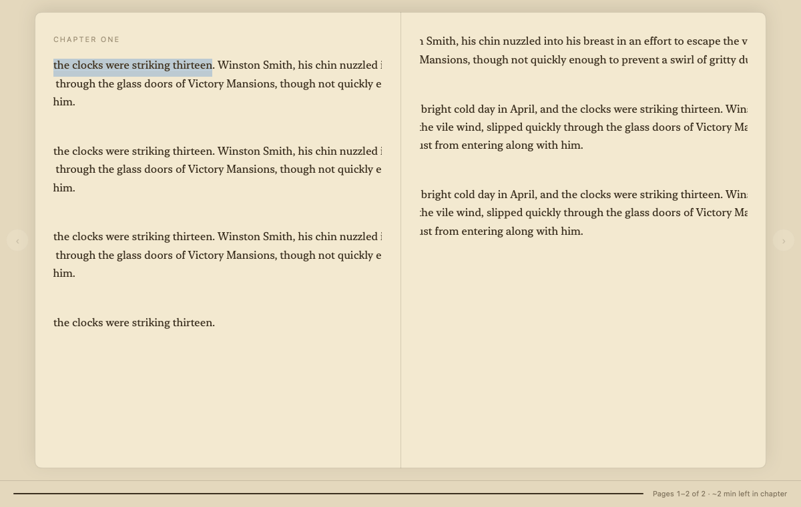
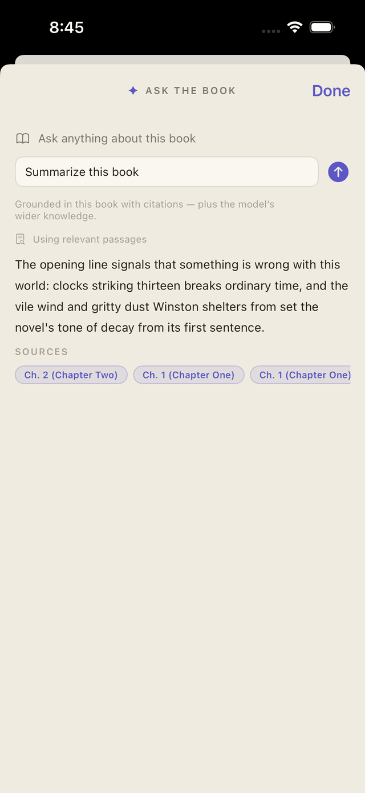
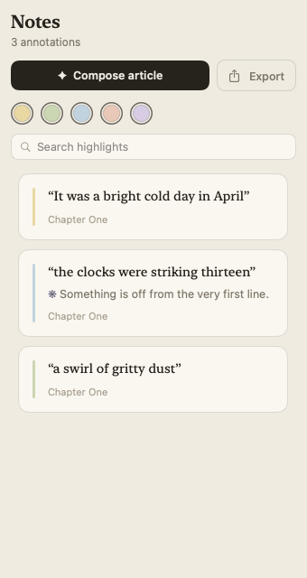
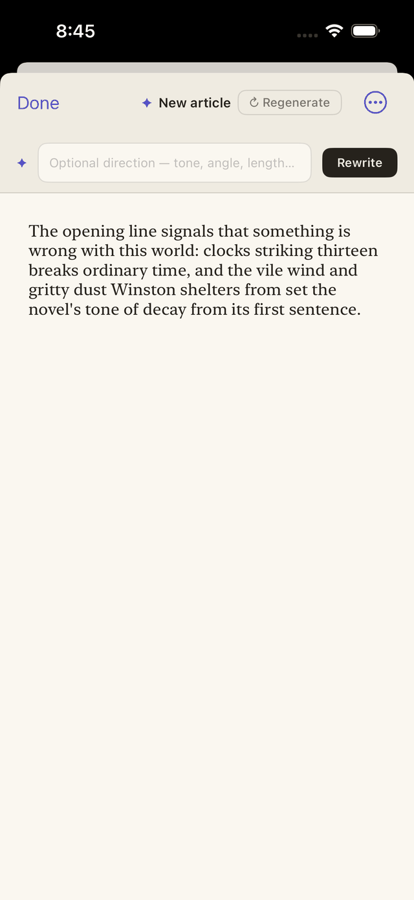
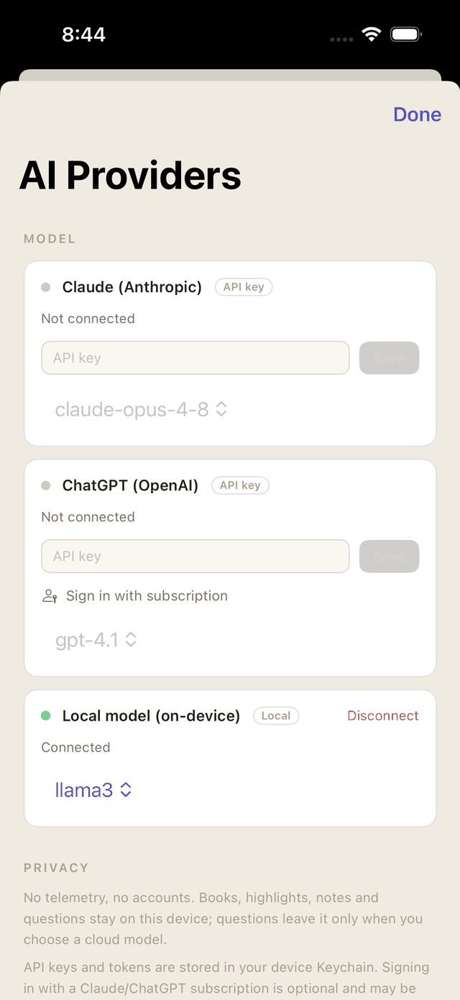

A reader first
Beautiful, book-shaped reading.
EPUB, PDF, and plain text or Markdown — your DRM-free files, read natively. Serif typography, warm Paper, Sepia, and Dark themes, and three layouts: continuous scroll, single page, or two facing pages like an open book, with page turns on the arrow keys. Designed for long, uninterrupted reading sessions.

Ask the book
Answers with receipts.
Select a sentence — or nothing at all — and ask. Readr streams an answer grounded in the whole book, with source citations that point back to the passages it came from. No copy-pasting into a chatbot, no leaving the page — your reading stays uninterrupted.

Highlights → article
Your notes leave the margins.
Every highlight and note lands in a live Notes panel as you read — filter by color, search, jump back to the page. Then let Readr compose them into an editable Markdown article that streams in live, ready to export or share.
Nothing is trapped: annotations always export as clean Markdown.


Bring your own AI
Your model, your rules.
Paste an Anthropic or OpenAI API key, or point Readr at a local Ollama model and stay fully offline. There is no Readr account and no middleman server — the app talks straight to the provider you chose.

Privacy
Your library is nobody's business.
Readr ships with no telemetry, no accounts, and no analytics. What you read — and what you ask — stays between you and the model you chose.
No telemetry, ever
Readr phones home to no one. Your books, highlights, notes, and questions live on your device.
Keys in the Keychain
API keys and tokens are stored only in the system Keychain — never in preferences, files, or logs.
Offline local mode
With a local Ollama model, the app only talks to your local Ollama server — nothing leaves your machine. It's open source: check for yourself.
Get Readr
Start asking your books.
Grab the latest macOS build, or join the iPhone & iPad beta on TestFlight.
Readr.app to
Applications, and open — no security warnings. (Releases before v2.9.0 were
unsigned and needed a right-click → Open; that's over.)